Portals: one simple screen per job
A doctor, a nurse or a sample collector does one job all day. A portal is a screen made only for that job. It has a short menu of tabs at the top, no big sidebar, and a home page that is a worklist: "what is waiting for me now", most urgent first. The pictures come from the demo hospital with made-up patients.
- The portal opens by itself after sign-in. The role of the login decides which one.
- It works on a PC, a tablet and a phone. On a phone the tabs scroll sideways and tables turn into cards.
- Lists refresh by themselves (every 15 to 30 seconds). Refresh does it at once.
- The top bar has your name, UR / EN (Urdu or English), Help (this manual) and Sign out. Some portals also have a printer icon: My print design.
- Staff in a portal see only their own location (the one in the top bar) and, for doctors and nurses, only their own patients.
Which role opens which portal
The owner gives each login one role in Settings › Users. These roles open a portal. All other roles open the full app.
| Portal | Address | Roles (name in Settings › Users) |
|---|---|---|
| Doctor | /doctor | Doctor (Consultant) |
| Nurse | /nurse | Nurse |
| Sample room | /collection | Sample Collector, Rider |
| Front desk | /desk | Receptionist |
| Admission desk | /admission | Admission / IPD Billing |
| Lab | /laboratory | Lab Technician, Pathologist |
| Radiology | /imaging | Radiographer / Technologist, Radiologist |
| Pharmacy | /dispensary | Pharmacist, Pharmacy Assistant |
| ER | /emergency | ER Medical Officer, ER / Triage Nurse, Medico-Legal Officer, Ambulance Dispatcher |
- A portal login that types another address (for example
/dashboard) is sent back to its own portal. - A menu tab shows only when the hospital's plan has that module and the role may use it. For example, Duty shows only when the duty roster module is on.
- One person, two jobs: ask the owner for a second login with the other role. A portal role is never widened.
Signing in: email or mobile
Your hospital's address › Sign in- Open the hospital's address in Chrome or Edge (on a phone too).
- In Email or mobile number type your email, or the mobile number saved on your login (for example 0300 1234567).
- Type your Password and click Sign in. Your portal opens.
Give a staff member a login / reset a password
For the owner, administrator or HR. Every person gets their own login. Never share one login: everything is saved under the name of the person signed in.
There are two places to do it. Both change the same login.
Way 1: Settings › Users (owner / administrator)
- Open Settings › Users and click Add.
- Fill Name, Email, Phone (the mobile they may sign in with), Password (at least 8 letters / digits), Role, Home location, Discount limit (empty = the role's limit), Active, and Also works in locations if they work in more than one place.
- Save. Tell the person their email or mobile and the password.
- Reset a password: click the pencil on the user, type a new Password, Save. Left empty, the password stays as it was.
- Block a login (a leaver, a lost phone): edit the user and switch Active off. Never delete a user: their past work keeps their name.
- The role decides the portal (table above). Changing the role changes the portal at the next sign-in.
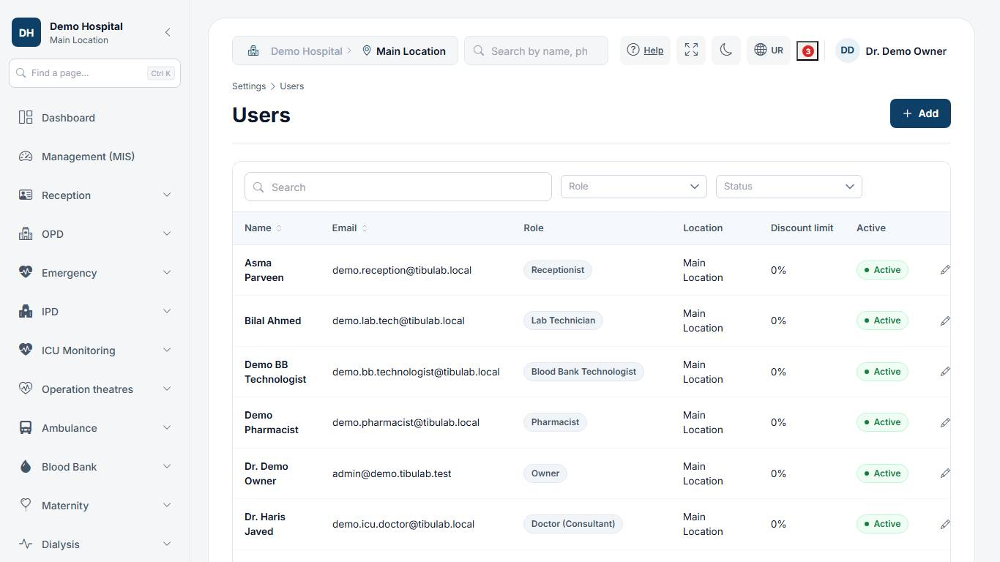
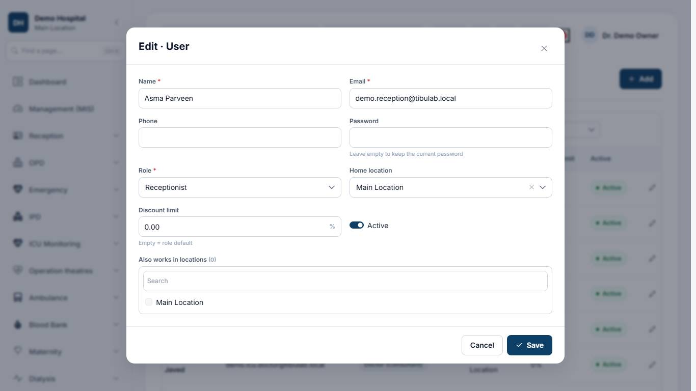
Way 2: from the HR employee profile (Login & password)
An employee record in HR is not a login by itself. You can give the employee a login from his profile, so the login and the employee are joined:
- HR & Payroll › Employees, open the employee, tab Roles.
- In Login & password: email (the employee's email is filled in), Mobile, Password and Role (decides the portal they open). Click Create login.
- Later, on the same card: New password › Set password, or Block login / Unblock login. Only the owner can change the owner's password.
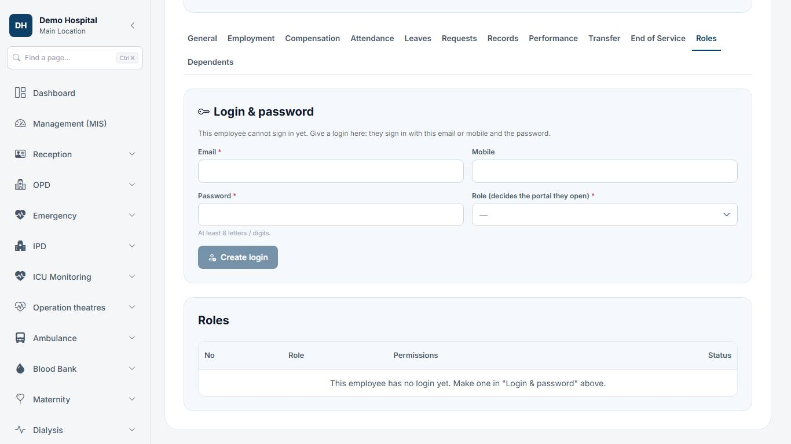
Doctors and nurses: login joined to the HR record
A doctor is one HR employee with the Doctor part filled in (OPD › Setup › Doctors or Billing › Referring Doctors; both open the same form). The doctor portal finds "his" queue, patients and earnings through this link. If a doctor sees "Your login is not linked to a doctor in HR", open his employee profile and create (or join) the login in Roles › Login & password. The same goes for a nurse: her login and her HR record must be one person, so her duty roster finds her ward.
Owner / admin: open any portal with "View as"
Your name (top right) › PortalsThe owner and administrator can open every portal, to work there or to check what a staff member sees.
- Click your name at the top right. Under Portals pick one: Doctor portal, Nurse portal, Sample room portal, Front desk portal, Admission desk portal, Lab portal, Radiology portal, ER portal, Pharmacy portal.
- A blue View as bar appears at the top. In the doctor portal choose a doctor; in the nurse portal choose a ward. The other portals show the location chosen in the header.
- The bar has buttons to jump to the other portals, and Back to TibuLab to go back to the full app.
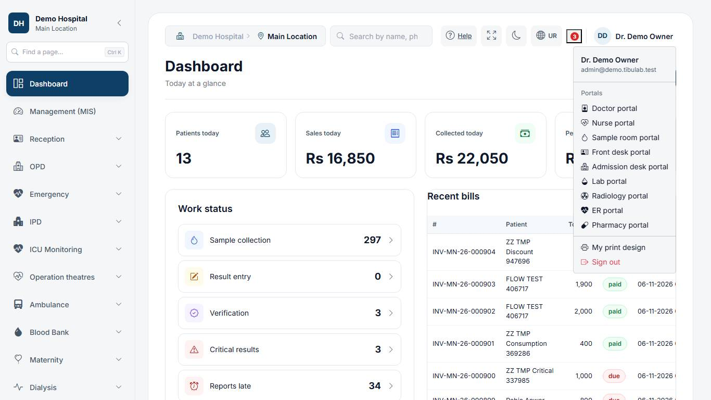
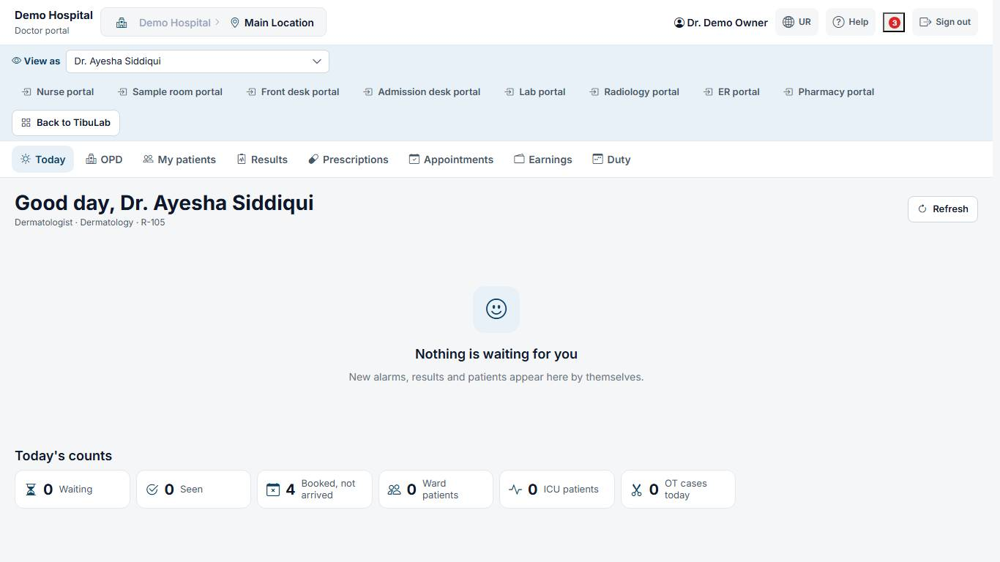
Doctor portal
/doctorHow do I get a login? How do I add a doctor?Who: consultants and OPD doctors (role Doctor (Consultant)). On a PC in the OPD room, and on a phone or tablet on ward rounds.
| Menu | What is there |
|---|---|
| Today | Home. What waits for you, most urgent first: ICU alarms and abnormal vitals, critical lab results, prescriptions and notes waiting for your signature, new results, rounds not done today, discharges with no summary, your admission advice. Under it: today's counts (waiting, seen, booked not arrived, ward and ICU patients, OT cases). |
| OPD | Your OPD desk: queue, patient, notes, prescription pad, tests, advice, referral / admission, certificate. |
| My patients | Your admitted patients by ward and bed (ICU beds with live values). Filters: All, Round not done, ICU, Alerts. Also seeing = another consultant's patients you were called to see. Nurse handover shows the ward's last handover. |
| Results | To review (tests you ordered in OPD) and My patients' reports (lab and radiology). |
| Prescriptions | To sign (typed by your assistant or the pharmacy), My Rx templates, My note templates, My pad buttons. |
| Appointments | Your appointments for the coming days and your weekly OPD sittings. |
| Earnings | Your shares, payouts (gross, tax, net) and balance. |
| Duty | Your coming duties from the published roster, and duty swap requests. |
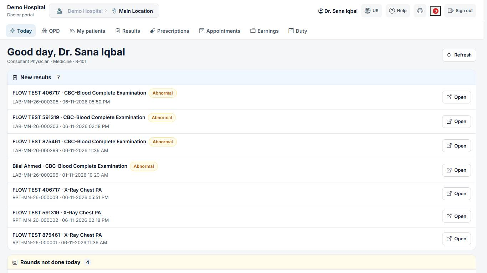
An OPD patient, step by step
- 1. TokenFront desk
The patient gets an OPD token or checks in an appointment. He appears in your queue.
- 2. Call next (F2)Doctor
The token shows on the TV with voice. Recall (F3) calls again; Not present sends him to the end.
- 3. Vitals and notesDoctor or assistant
BP, pulse, temp, SpO2, weight, sugar › Save vitals. Complaint, examination, diagnosis (ICD-10).
- 4. Prescription and testsDoctor
Search a medicine or pick a template. Dose like 1+0+1, meal timing, days; the Urdu line and the quantity fill in. Lab / X-ray tab for tests.
-
Done today
Advice & follow-up date › Print Rx › Finish & call next.
Come back with reportsThe tests are billed at the desk. When results are verified they show on Today and in his visit.
- 5. After the visitOthers
Pharmacy dispenses the Rx. Or Refer / Admit › Advise admission: the admission desk admits him to your ward.
The OPD desk
- Top: Call next (F2), Recall (F3), Not present, Break, TV, your tokens and today's appointments, counts.
- Patient bar: token, name, age / sex, MRN, allergies in red, last visit, then the vitals row with Save vitals.
- Left: complaint (note-template chips), examination, diagnosis, More notes; under it Reports (new and abnormal marked), Visits (with Repeat this Rx) and Allergies / problems. Record opens the full patient record.
- Right, tabs: Prescription, Lab / X-ray, Advice & follow-up (3 days, 1 week, 2 weeks, 1 month), Refer / Admit (Advise admission), Certificate.
- Bottom: Save (Ctrl+S), Print Rx (preview first), Finish, Finish & call next (Ctrl+Enter).
- On a tablet the desk becomes big steps: Vitals & Notes, Prescription, Tests, Reports / History, Finish.
- A doctor who writes on paper: the counter types the paper Rx (OPD › Paper prescription). Write it here this time switches the pad on for one visit.
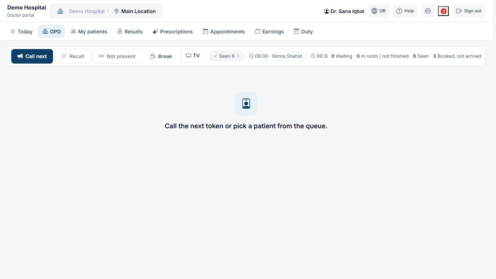
Templates, pad buttons and print design
- Prescriptions › My Rx templates › New template: name, medicines, tests, advice. On the desk pick the template and all lines are added. A shared template is copied with Duplicate before changing it.
- My note templates: ready text for complaint and examination.
- My pad buttons: which dose, meal and route buttons show on your pad, their order, your days buttons and your own frequencies (with Urdu). Save my pad.
- My print design (printer icon at the top): how your Rx prints. Pick one: My printed pad (TibuLab prints only the patient line, medicines and follow-up in the blank space; drag the boxes, test print with a mm grid), My letterhead picture (your letterhead picture on plain A5 / A4), or Design in TibuLab. Dates print DD-MM-YYYY.
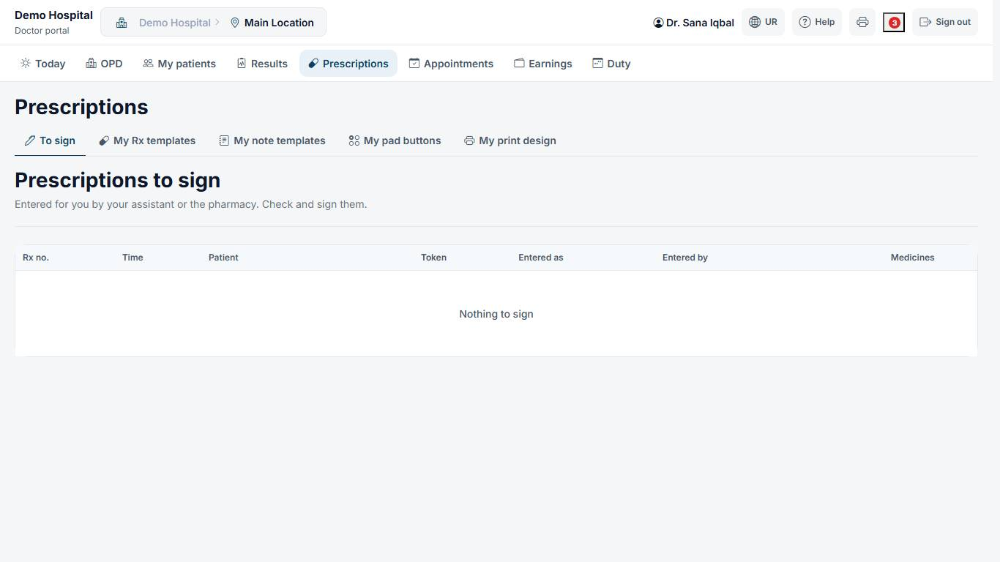
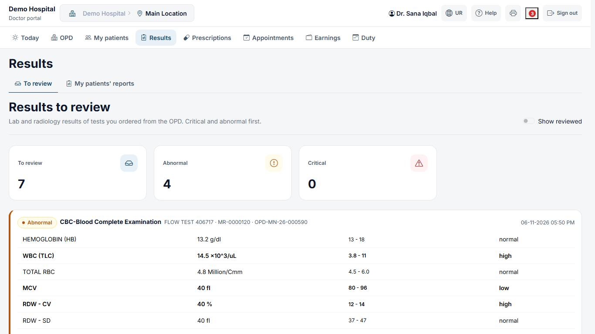
Ward and ICU rounds
- My patients: tap a patient. The admission chart opens with only the clinical tabs: Doctor (round note and orders), MAR and Nursing (read only for you), Discharge.
- Write the round note. Add orders: medicine (dose, route, how often, when needed), diet, lab, X-ray, an order set, or stop an order. The nurse must read every new order.
- ICU bed: live HR / SpO2 / BP / RR / Temp and alarms. Acknowledge an alarm on Today.
- Going home: Order discharge, write the Discharge summary with the medicines on discharge (they go to the pharmacy as one Rx), Print summary. Clearance, the final bill and the discharge itself are done by the admission desk.
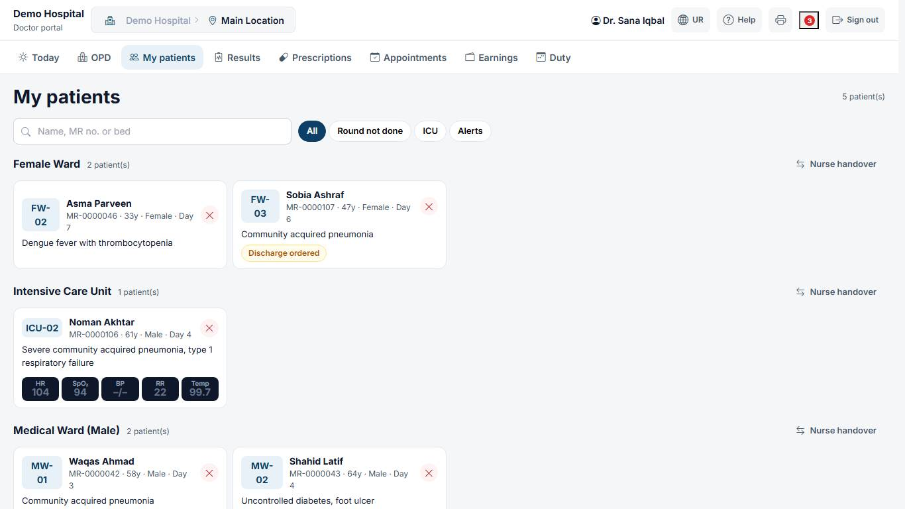
The TV in your room
TV on the OPD desk shows your queue on the TV plugged into this PC by HDMI (Show on this PC's TV). With the TibuLab Print Helper it opens by itself every morning. See Queue and doctor TVs.
Common questions
- I see "Your login is not linked to a doctor in HR".
- Ask the owner to join your login to your HR record (Way 2).
- A patient is not in My patients.
- You only see patients where you are consultant or admitting doctor, or wrote a note or order. Others are not shown.
- A critical result is on Today.
- Read it and click I have read it. The lab sees that you read it.
- The Rx prints in the wrong place on my pad.
- My print design › My printed pad: test print, then move the boxes 1 mm at a time.
Nurse portal
/nurseHow do I get a login?Who: ward and ICU nurses (role Nurse). On the nursing station PC or a tablet. It knows your ward from today's duty roster. With no duty today, Choose your ward: this device remembers it.
| Menu | What is there |
|---|---|
| My shift | Home. ICU alarms on your beds, critical lab values, late / missed medicines, vitals out of range, doctor orders to read, medicines due now, vitals due, care tasks due, arrivals, discharges ordered, handover to accept. Counts: patients, free beds, late doses, vitals due, tasks due. |
| Patients | The bed board of your ward: patient, consultant, day of stay, alerts, next medicine time. Filters All, With alerts, Going home. |
| MAR | Medicine round: every dose due in the next 1, 2 or 4 hours, bed by bed, late ones in red. |
| Vitals | Vitals round: one row per patient, due ones first; ICU beds show the monitor reading to check. |
| Tasks | Care tasks: to do and done this shift. |
| Handover | Give the end-of-shift handover and accept the one given to you. |
| Requests | Pharmacy requisition, store requisition, linen, CSSD, equipment complaint, housekeeping, report an incident, duty swaps (only the ones your hospital uses). |
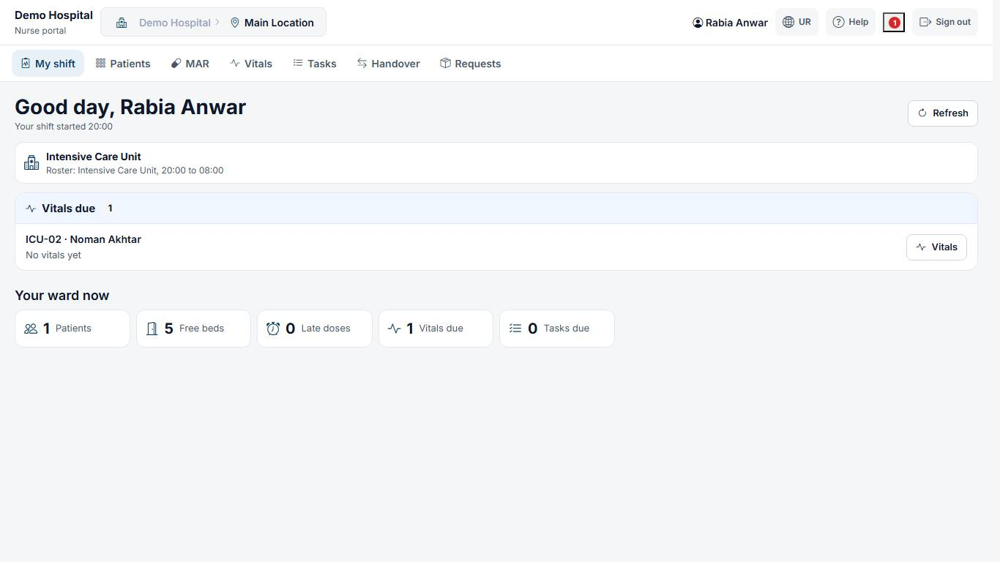
A shift, step by step
- 1. Accept the handoverNurse
My shift › Handover to accept: read each patient's SBAR and accept.
- 2. Read new doctor ordersNurse
Every new or stopped order: read it and tap I have read it. The doctor sees who read it and when.
- 3. Medicine round (MAR)Nurse
Given, or Not given with why (nil by mouth, away, vomiting, not available, doctor asked to hold, BP too low). Not given goes to the doctor's Today.
- 4. Vitals and tasksNurse
Vitals round: type the values. ICU: check the monitor reading. Tasks: Done or Skip.
-
Something wrong?
Out-of-range vitals, alarms and missed doses go to the doctor's Today by themselves.
Ward needsRequests: medicines from pharmacy, store items, linen, equipment complaint.
- 5. Give the handoverNurse
Handover › Give handover: Situation, Background, Assessment, Recommendation for each patient.
One patient
Patients › tap the bed. Tabs: Medicines (give / held / refused with reason), Vitals (enter), In / Out (fluid balance), Notes (nursing note), Tasks, Orders (the doctor's running orders, read only), Profile (the patient record). A nurse cannot write medicine orders.
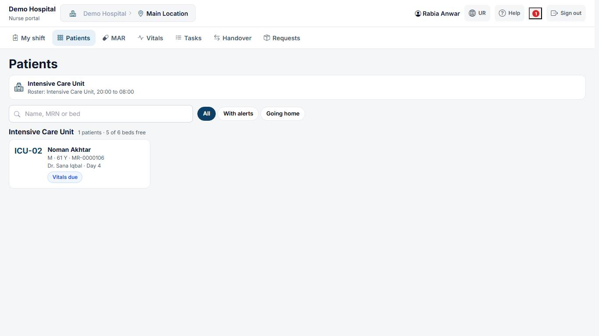
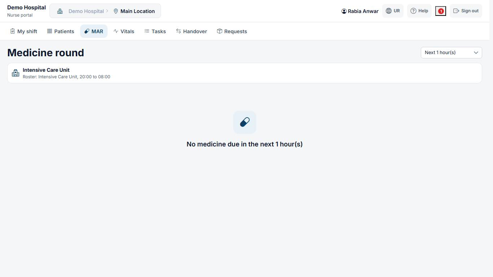
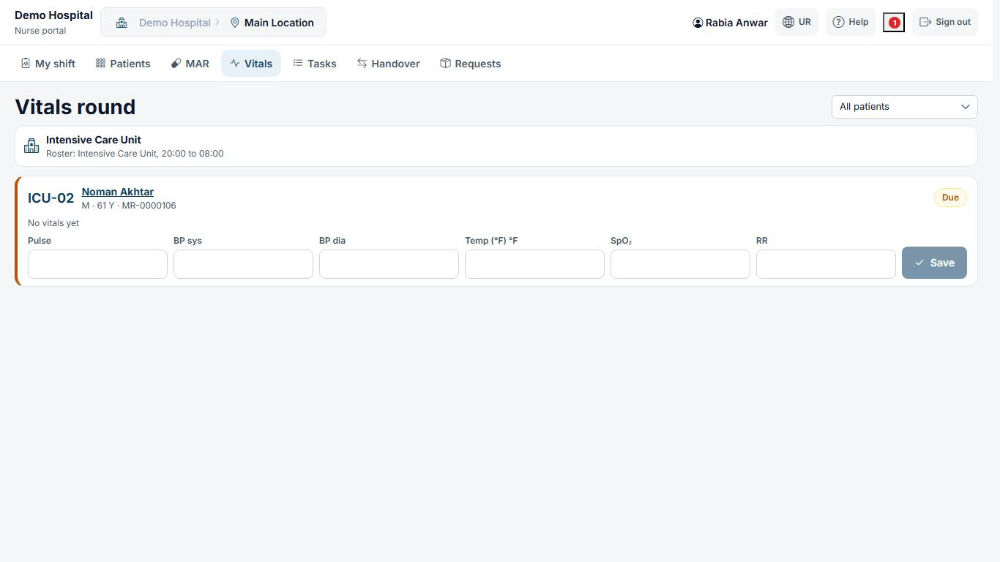
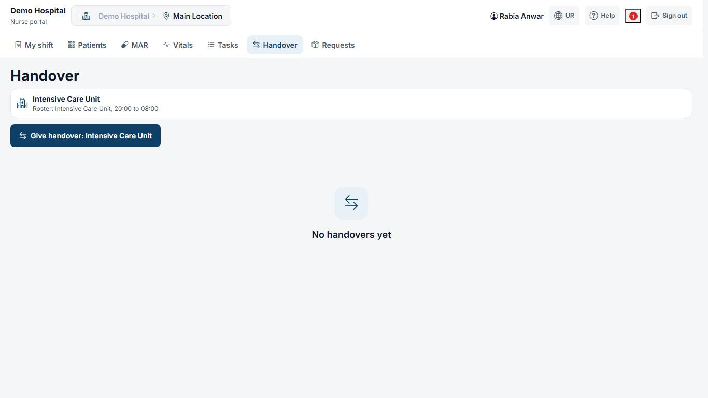
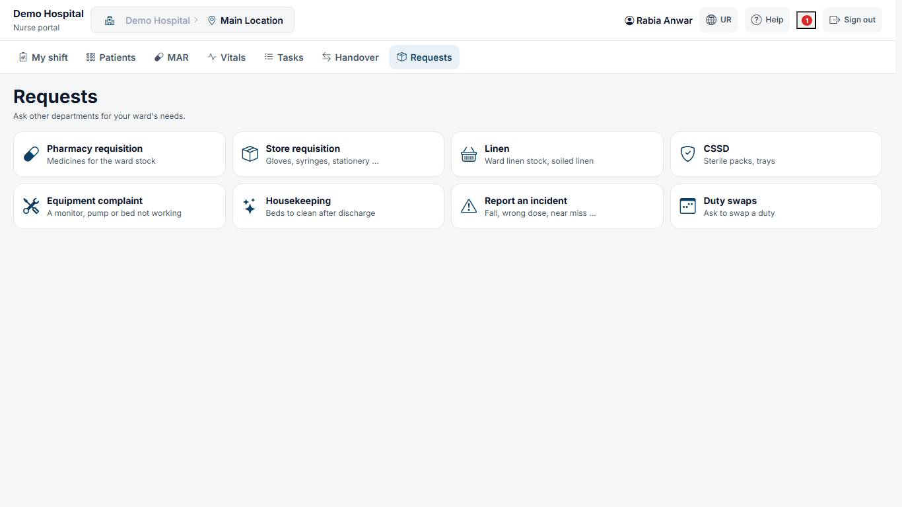
Common questions
- I see "Choose your ward".
- You have no duty on today's roster. Pick your ward; ask the in-charge to fill the roster (Duty roster › Monthly roster).
- A patient says "not in your ward today".
- He moved to another ward, or you are on another ward's roster.
- A medicine is not in the ward stock.
- Requests › Pharmacy requisition. Your ward's store is already chosen.
Sample room portal
/collectionHow do I get a login?Who: sample collectors (role Sample Collector) and riders (role Rider). The same counter that takes the sample also hands over the report.
| Menu | What is there |
|---|---|
| Waiting | Home. Patients waiting for a sample: urgent / ER / IPD first (red), then by token. Tube colours, fasting, notes. Counts: waiting, collected today, rejected today, reports ready. |
| Collected today | Tubes collected today: reprint labels, reject / recollect. |
| Rejected | Tubes rejected today, the reason, and whether a new sample was taken. |
| Reports ready | The report counter: verified reports not handed over yet. |
| Home collection | A rider's home visits of the day (the collector sees every rider's). |
| Sample batches | Tubes sent to another location's lab (only with more than one location). |
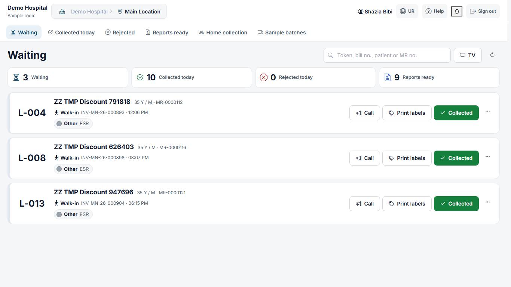
From sample to report handover
- 1. Bill with lab testsFront desk
The patient appears on Waiting by himself.
- 2. CallSample room
The lab hall TV shows the token and the voice calls it. Call again repeats it.
- 3. Print labels, take the sampleSample room
Stick one barcode label on each tube. Then Collected (or Collect … only for one tube). Not here? More › Not present.
- 4. Lab tests itLab
The lab receives the tube, enters and verifies the results.
- 5. Reports ready › CallSample room
The TV calls the patient to the report counter (Urdu and English).
- 6. Hand overSample room
Due money first, print the report, write who collected it.
Reject a tube
More › Reject / recollect: choose Which tube and the Reason (haemolysed, clotted, too little, wrong tube…), add a note. The patient goes back to Waiting with "Recollect".
Report handover
- Reports ready lists each patient, token / bill, tests, ready time, paid or due. Tabs: All ready, Not collected for N+ hours, Handed over today.
- Call (or Recall) calls the patient to the report counter on the TV.
- Hand over: if money is due, Take … (cash) first (your cash register must be open). Then Print report, or tick Already printed by the patient from the portal.
- Collected by: Patient, or Attendant with name, relation and CNIC last 4 digits. Click Handed over.
- Not collected for long: Send reminder (WhatsApp / SMS).
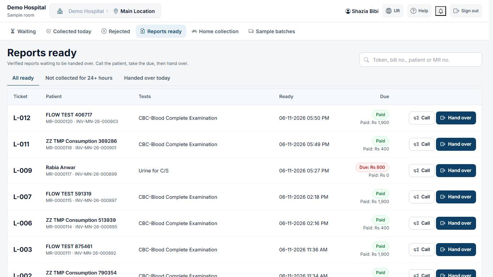
Rider: home collection
A rider's portal opens on Home collection: the visits given to him for the day. Per visit: Call the patient, Map, On the way (the patient gets a message if that is on), Collected (with the cash taken) or Not at home. The tubes are barcoded when he brings them back to the sample room.
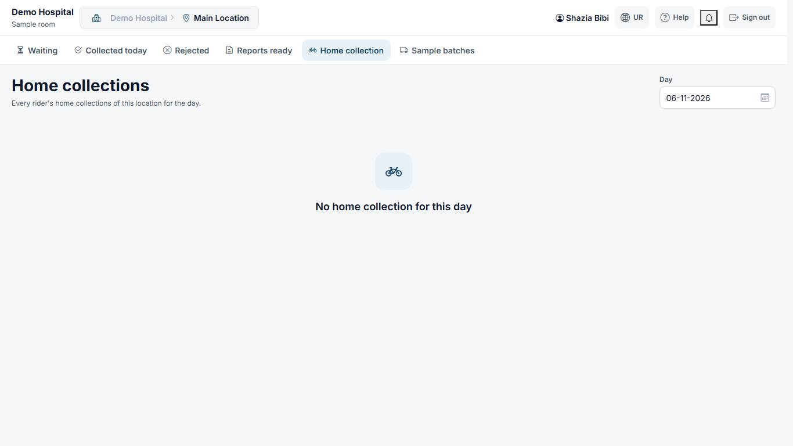
The lab hall TV
TV (top right of Waiting) shows the calls on the TV plugged into this PC. See Queue and doctor TVs.
Common questions
- The labels did not print.
- Print labels again. Check the label printer (Printers and labels).
- "Open your cash register first".
- Click Open cash register in the hand-over window and enter the cash in hand.
- A report is not in Reports ready.
- It is not verified yet. Ask the lab.
Front desk portal
/deskHow do I get a login?Who: receptionists (role Receptionist). Registration, bills, OPD tokens, appointments and their own cash register.
| Menu | What is there |
|---|---|
| Home | Doctor orders to bill (blinking), tokens today by doctor (waiting, in room, seen), appointments arriving in the next hour (Check in), my cash register, reports ready, dues to collect today. |
| New bill | The POS, full screen: see New Bill (POS). |
| OPD token | Patient + doctor + a free token number + the fee. One click registers the visit, bills the fee and prints the slip. For another day the same click books an appointment. |
| Appointments | A doctor's day as slots: book, move, cancel, no-show, check in. |
| Doctor orders | Tests and X-rays the doctors ordered that nobody has billed yet. Bill takes the cash on your register. |
| Reports ready | Read only: where a patient's report is. The sample room hands it over. |
| Patients | Find, add and edit patients (no clinical notes). |
| My cash register | Open with cash in hand, see what is expected in the drawer, close with counted notes. |
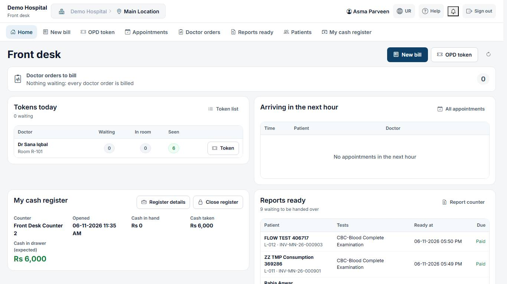
A day at the front desk
- 1. Open my cash registerReceptionist
Counter and cash in hand. Money is taken only on an open register.
-
OPD patient
OPD token: patient, doctor, token, fee › one click. Slip prints.
Lab / X-ray patientNew bill: tests, payment, receipt and labels.
- 2. Doctor orders come backDoctor
Tests ordered on the OPD desk blink on Home. Bill them.
- 3. Appointments arriveReceptionist
Check in: the patient joins the doctor's queue.
- 4. Close the registerReceptionist
Count the notes, close. The manager sees the difference, if any.
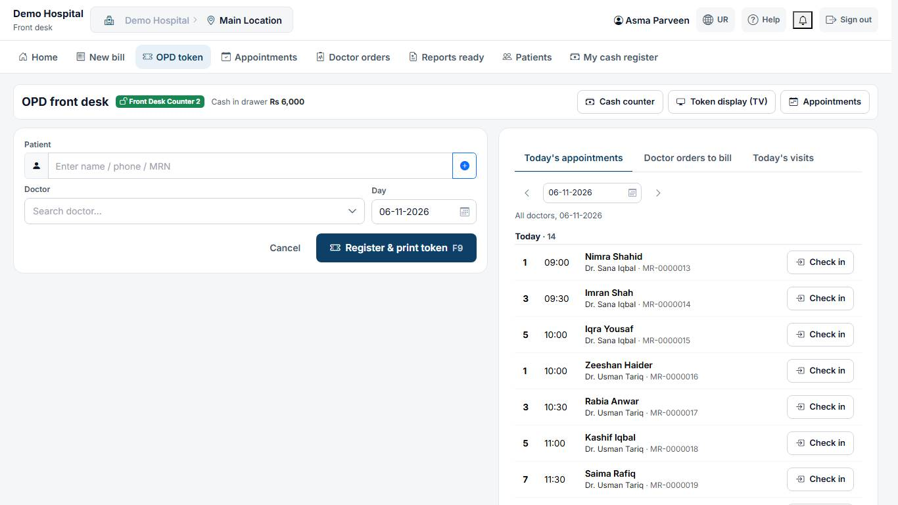
Common questions
- "No counter is set up for you".
- The admin adds a counter in Billing › Cash Registers and allows you on it.
- The token number I want is taken.
- Pick any free number on the doctor's token board.
- A patient asks for his report.
- Reports ready shows if it is ready and if money is due. Send him to the report counter.
Admission desk portal
/admissionHow do I get a login?Who: the admission / IPD billing desk (role Admission / IPD Billing). Admit, beds, deposits, transfers, final bills and discharges.
| Menu | What is there |
|---|---|
| Home | Counts (in house, advice to admit, discharges ordered, deposits low); admission advice waiting from OPD / ER; bed requests; discharges ordered with clearances and final bill; deposits low; beds free by ward; my cash register. |
| Bed board | Floors, wards and beds coloured by status (free, occupied, reserved, cleaning). Click a bed to admit, transfer, discharge or clean. |
| Admit | From the doctor's advice, or a New admission: bed (male / female ward checked), consultant, payer / pre-authorisation, estimate, deposit. Also the waiting list, estimates and pre-authorisations. |
| Admissions | Patients in house; open one to see the chart's desk tabs. |
| Transfers | Move a patient to another bed / ward, or to another consultant. The old bed goes to cleaning. |
| IPD bills & deposits | Every patient in house: bill so far, received, balance. Deposit low = ask the attendant for more. |
| Discharges | Discharges ordered by the consultant: clearances, final bill, discharge. |
| Patients | Find and register patients. |
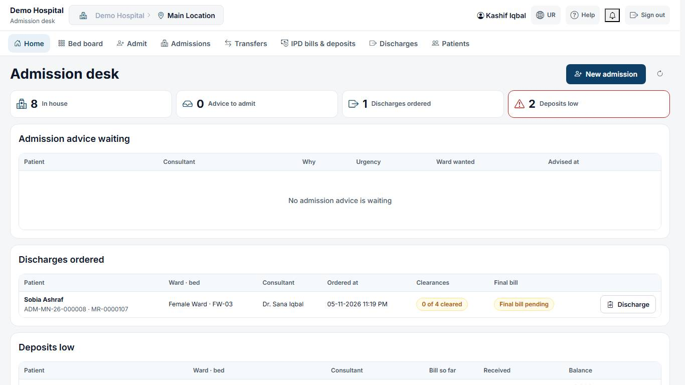
Admission to discharge
- 1. Advise admissionDoctor
OPD or ER doctor: Refer / Admit › Advise admission. It appears on Home.
- 2. AdmitAdmission desk
Bed, consultant, payer (cash / panel / Sehat card), estimate, deposit on your register.
- 3. In the wardDoctor and nurse
The patient appears for the ward nurse and the doctor. Charges run every day.
- 4. Deposits and transfersAdmission desk
Deposit low: take more. Transfer for a new bed or consultant.
- 5. Order discharge + summaryDoctor
It appears under Discharges ordered.
- 6. Clear, final bill, dischargeAdmission desk
Departments clear, final bill (refund extra deposit), Discharge patient. The bed goes to housekeeping.
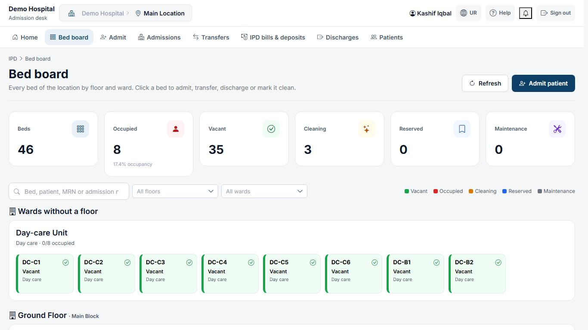
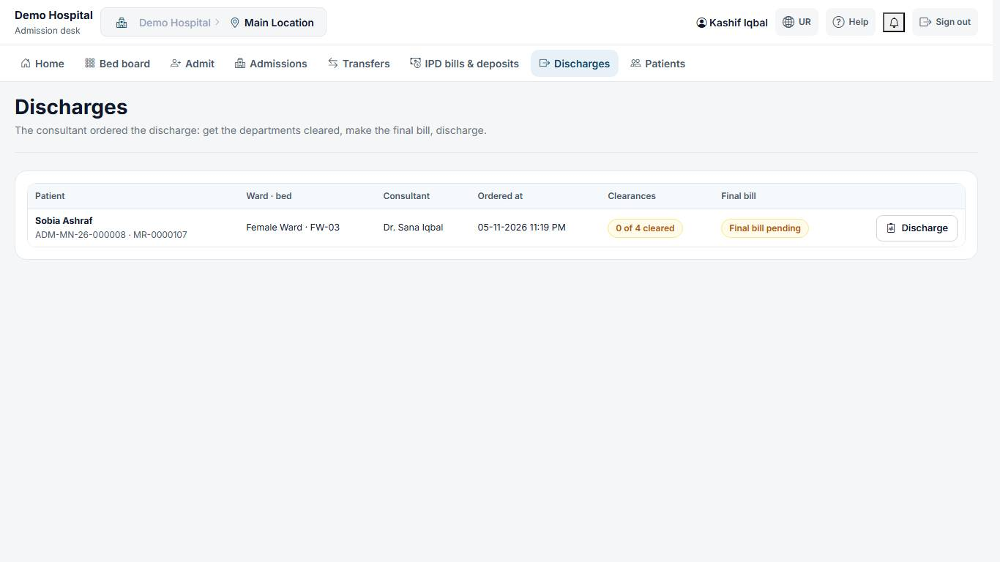
Common questions
- The bed I want is refused.
- A male patient cannot go into a female ward and the other way round. Pick a bed in the right ward.
- I cannot discharge.
- All departments must clear first, and the final bill must be made.
- Extra deposit to give back?
- The final bill shows it; refund it from your register.
Lab portal
/laboratoryHow do I get a login?Who: lab technicians (role Lab Technician) on their bench, and pathologists (role Pathologist) who verify and sign. Urgent, ER and ICU samples always come first, then the oldest promised report time.
| Menu | What is there |
|---|---|
| Worklist | Home. Counts (to receive, to enter, to verify, critical to call, reports late), Tubes to receive with a barcode box, Results to enter and (pathologist) Results to verify. |
| Result entry | Report Entry, full screen: see Report entry and printing. |
| To enter | The lab worklist on its "Enter results" tab. |
| Verify | Pathologist only: results waiting for verification. |
| Critical | Critical values to phone, with Log call. |
| Bench stock | Stock issued to your lab section (issue and return = the in-charge). |
| Machines | Machine results and analyser status (technician; when analysers are connected). |
| QC | Quality control results. |
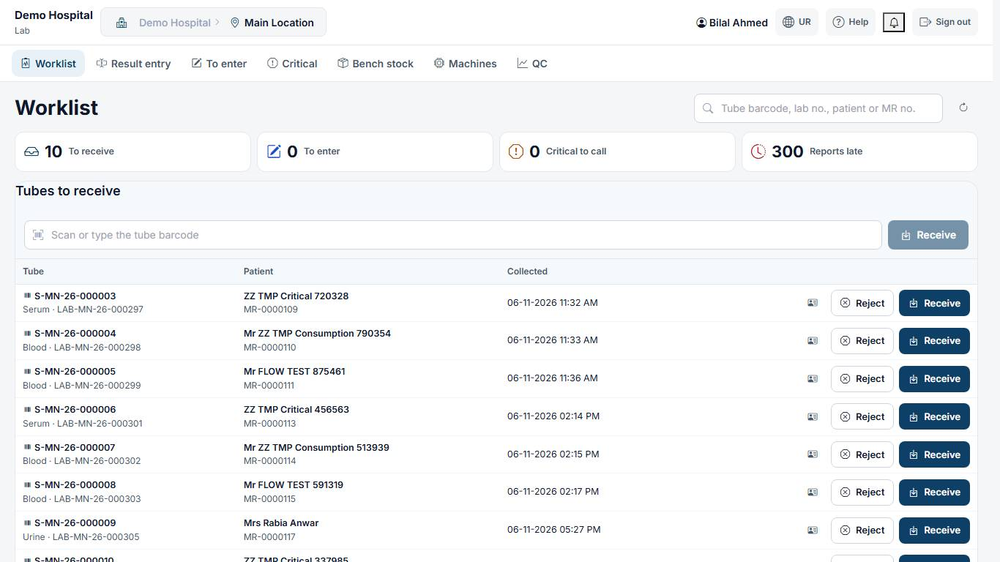
A tube's day
- 1. Tube arrivesSample room
It shows under Tubes to receive.
-
Receive
Scan or type the tube barcode in the box (or click Receive).
RejectHaemolysed, clotted, too little, wrong tube, no label: it goes back to the sample room for a new sample.
- 2. Run itAnalyser
Machine values come in by themselves on connected analysers.
- 3. Enter resultsTechnician
Check or type values, Save. A critical value? Phone and Log call.
- 4. VerifyPathologist
Read the whole report and earlier values, then Verify. Doubtful: send back.
- 5. Report readyPatient
It joins Reports ready at the counter, the doctor's Today, and the patient portal.
Critical values: "Log call"
- Critical lists each panic value with the time to report by. Tabs: To report, Overdue, Reported, All. Overdue values turn red and go to the lab in-charge.
- Phone the doctor or ward (the list shows who to call and the phone).
- Log call: who you called and their name, how (phone, in person, WhatsApp), the Value read back (it must match), the time.
- When the doctor or nurse clicks "I have read it" in their portal, it shows "Read in portal".
Common questions
- The barcode says "not found".
- The tube belongs to another location, or was not collected yet.
- I cannot see Verify.
- Only a pathologist verifies.
- A machine value looks wrong.
- Re-run the tube; change the value before Save, or reject it.
Radiology portal
/imagingHow do I get a login?Who: radiographers / technologists (scan the patient) and radiologists (write and sign the report). All radiology screens also work in Urdu.
| Menu | Who | What is there |
|---|---|---|
| Today | Both | Counts (waiting today, arrived / scanning, to report, to verify, signed today). Radiographer: patients to scan, urgent first. Radiologist: studies to report and preliminary reports to sign. |
| Worklist | Both | The radiology worklist: Book, Arrived, Start, Scan done, Cancel exam. |
| Schedule | Radiographer | The rooms' day board and bookings. |
| Unmatched studies | Radiographer | Images that came in with no matching exam: Link to exam or Ignore. |
| Report | Radiologist | Scanned exams on the left, the report editor on the right. |
| Verify | Radiologist | Preliminary reports sent for verification: read, correct, sign. |
| Reports | Radiologist | Signed reports; Print gives the A4 report with letterhead and signature. |
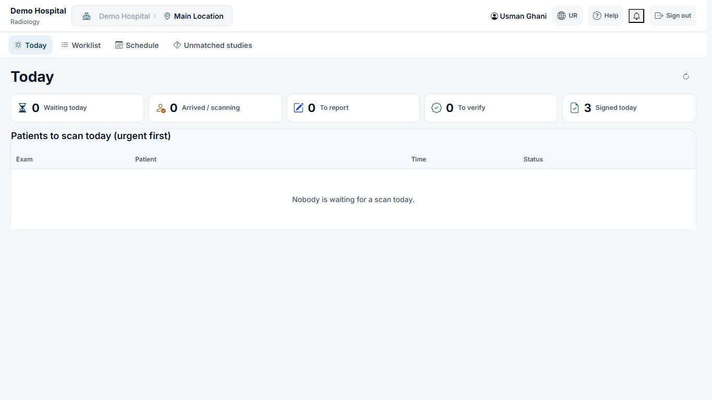
An exam, step by step
- 1. Exam billed or bookedDesk / ward / ER
It shows as Waiting.
- 2. Arrived › StartRadiographer
Check identity, preparation, contrast consent, pregnancy.
- 3. Scan doneRadiographer
Room / machine, films printed and wasted (why), contrast, dose, notes for the radiologist › Mark scanned.
-
Images by themselves
DICOM machines send to PACS; the exam shows "Images received (n)".
Images by handAdd images / files: photo, PDF or DICOM (up to 25 MB), or a machine folder imports them.
- 4. ReportRadiologist
Template, findings, impression, recommendation › Save draft or Send for verification.
- 5. Sign & verify, printRadiologist
After signing, a change needs Amend with a reason; the old version stays.
The report editor
- Template: start from a ready report. Findings, Impression, Recommendation.
- Critical finding with Doctor informed (name / phone): phone the doctor at once.
- Images: open them; tick Key image (printed on the report). Open in viewer when a PACS viewer is set.
- Buttons: Save draft, Send for verification, Sign & verify, Amend, Print. Previous reports of this patient are listed.
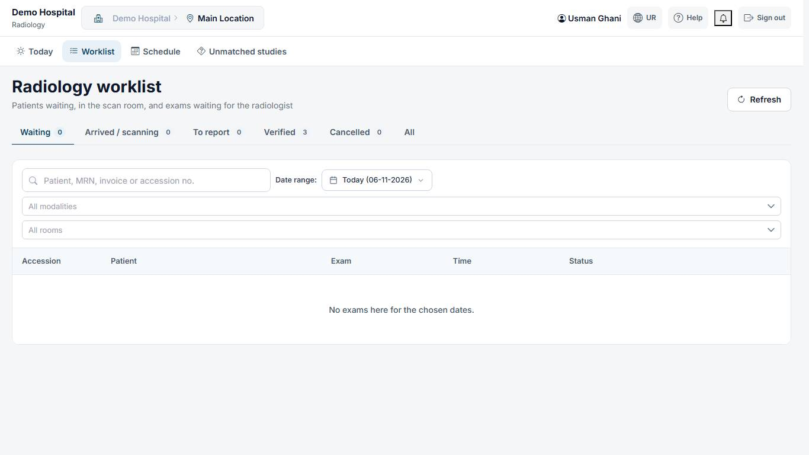
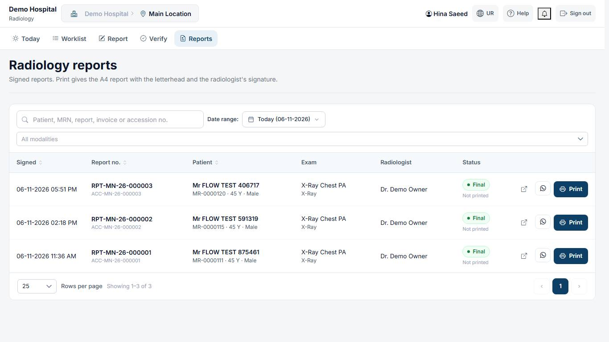
Machine folders are set by the admin in Radiology › Setup › Image folders; connecting X-ray machines: X-ray and radiology.
Common questions
- "Waiting for images".
- The machine has not sent them yet. Add them by hand, or look in Unmatched studies.
- I signed a report with a mistake.
- Amend, give the reason, correct and sign again.
Pharmacy portal
/dispensaryHow do I get a login?Who: pharmacists (role Pharmacist) and the counter cashier (role Pharmacy Assistant). Only the pharmacies and stores given to you.
| Menu | What is there |
|---|---|
| To dispense | Home. Counts (Rx to dispense, discharge Rx, requisitions and urgent ones, expired batches, expiring soon). Today's prescriptions not dispensed (discharge first), ward requisitions to issue, batches expired or expiring in 90 days. |
| Pharmacy sale | The sale counter, full screen. Exit comes back home. |
| Prescriptions | The OPD and discharge prescription queue: pending and dispensed. |
| Ward requisitions | Requests from the wards: approve, issue. |
| Stock | Medicines on hand per store. |
| Batches & expiry | Every batch with expiry badges, recall, block / unblock, labels. |
| Sales | Bills of your pharmacies: view, reprint, take back. |
| Patients | Find and register patients. |
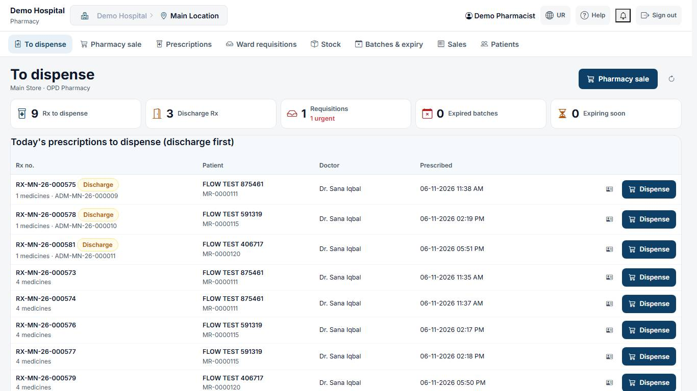
Prescription to sale
- 1. Doctor writes the RxDoctor
OPD Rx or discharge medicines. It appears on To dispense.
- 2. DispensePharmacist
Opens the sale counter with the Rx no. loaded. Record shows allergies and past medicines.
- 3. SellCashier
Batches are picked first-expiry-first. F8 cash (save, print, next), F9 card, F10 several ways.
- 4. DonePatient
The Rx shows as dispensed. Money goes into the cashier's open register.
Ward requisitions
- 1. Nurse asksNurse
Nurse portal › Requests › Pharmacy requisition (her ward store is chosen).
- 2. ApprovePharmacist
Urgent first, then needed soonest.
- 3. IssuePharmacist
The medicines go "in transit" to the ward store.
- 4. ReceiveWard
The ward receives them into its store.
Sale counter keys
| Key | Does |
|---|---|
| F2 / F4 | Search a medicine / choose the patient |
| F8 / F9 / F10 | Cash (save + print + next) / card / several ways |
| F6 / F7 | Park the sale / recall a parked sale |
| Ctrl+R | Reprint the last bill |
| + / − , U, Del, Esc | Quantity, change unit, remove line, back to search |
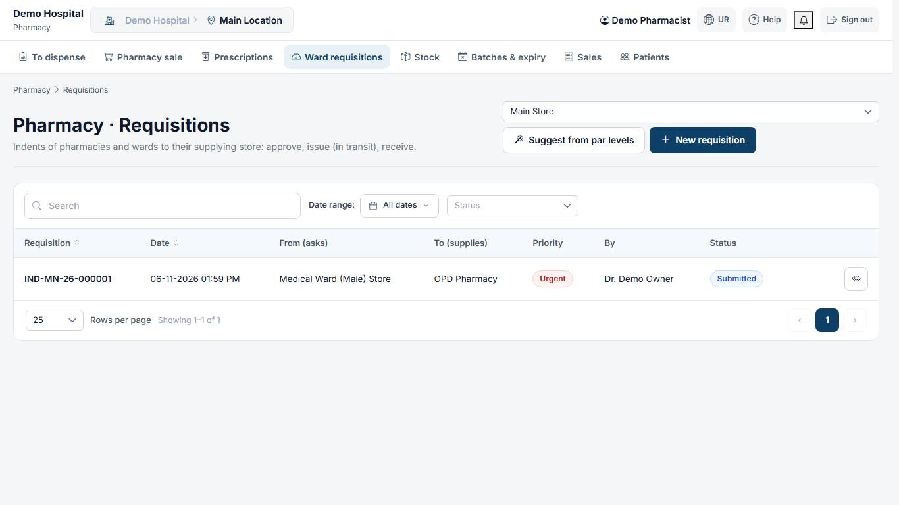
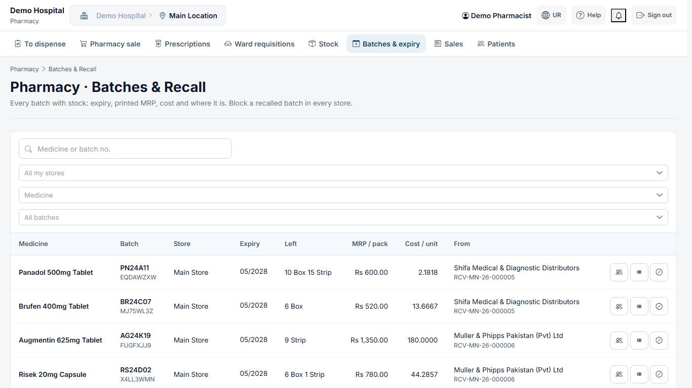
Common questions
- "No pharmacy assigned to you yet".
- The admin adds you to a pharmacy in Pharmacy › Setup › Pharmacies & Stores.
- A batch must not be sold.
- Batches & expiry › Block: it is blocked in every store.
ER portal
/emergencyHow do I get a login?Who: ER medical officers, ER / triage nurses, the medico-legal officer (MLO) and the ambulance dispatcher. Each sees only the tabs of their role.
| Menu | What is there |
|---|---|
| ER board | Home. Counts (in ER, waiting doctor, over target time, bays free), tiles by triage colour (Red, Orange, Yellow, Green, Blue, Not triaged; a tile filters the list), the patients with waiting time and who is seeing them, left the ER today, ambulance calls on the road. |
| Tracking board | Everyone in the ER by triage level and arrival, with bay, doctor, time in ER, pending labs / X-rays / doses, MLC. |
| Ambulance dispatch | Fleet and active trips. |
| Ambulance trips | Every trip with km, charge and billing. |
| ER register | Every ER visit: arrival, triage, doctor, disposition. |
| Medico-legal cases | MLO: the MLC register. |
| ER reports | Census by triage and other ER reports. |
| Patients | Find and register patients. |
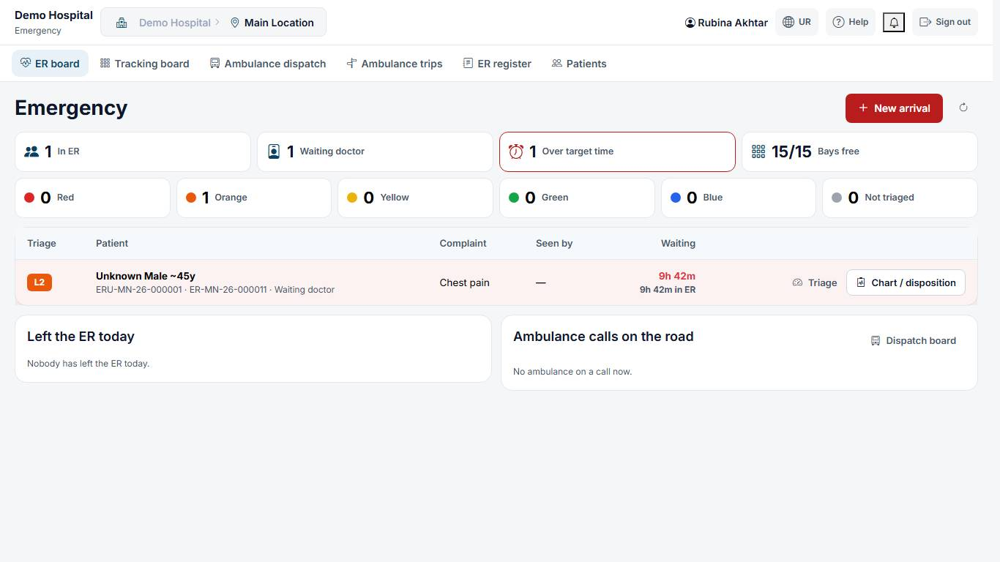
An ER patient, step by step
- 1. New arrivalER nurse / desk
Register him (an unknown patient gets a temporary number, merged later). Or the ambulance hands him over.
- 2. TriageTriage nurse
Level 1 to 5 (ESI or Manchester, as set) and vitals. The colour tile shows it; waiting time turns red past the target.
- 3. ChartER doctor
Notes, orders (lab, X-ray, medicine, procedure), doses, bill. Police case? It opens an MLC.
- 4. DispositionER doctor
Discharged home, Admitted, Referred out, LAMA, DAMA, Death in ER, Brought dead, Absconded › Save disposition.
- 5. Leaves the EROthers
Admitted: the admission desk gives a bed. Listed under Left the ER today.
Ambulance
Ambulance dispatch › New trip request: caller, patient, pickup address, landmark, destination, complaint, priority; Assign ambulance now. The trip moves: Left base › At scene › Transporting › Complete trip (odometer, charge). Hand over to ER registers the patient in the ER at once.
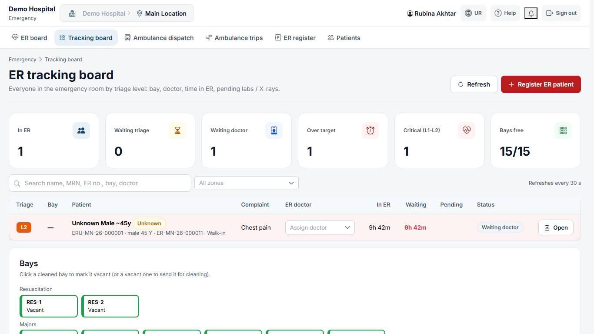
Common questions
- The patient's name is not known.
- Register him as unknown. Merge into the real record when he is identified.
- I cannot save the disposition.
- Only the ER doctor decides it.
Questions for every portal
| Question | Answer |
|---|---|
| How do I get a login? I forgot my password. | The owner or HR makes it, or sets a new password: Give a login / reset a password. |
| Can I sign in with my mobile? | Yes, when the mobile is saved on your login. |
| A tab in this manual is missing for me. | Your role or the hospital's plan does not have it. |
| The screen is in Urdu. | Click EN in the top bar (or UR for Urdu). |
| Shown dates. | Always DD-MM-YYYY, for example 06-11-2026. |
| Who is written as the person who did it? | Always the person signed in. Sign out when you leave a shared PC. |
| Another location's patient is "not found". | A portal shows only the location in the top bar. Switch it there if you work in more than one. |
Page checked against TibuLab on 06-11-2026.